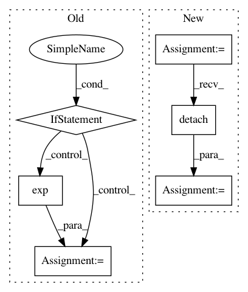

86aca57545cfe312151cc35528035cd9c0aafe2d,art/classifiers/pytorch.py,PyTorchClassifier,predict,#PyTorchClassifier#Any#Any#,48
Before Change
// Run prediction
preds = self._forward_at(torch.from_numpy(inputs), self._logit_layer).detach().numpy()
if not logits:
exp = np.exp(preds - np.max(preds, axis=1, keepdims=True))
preds = exp / np.sum(exp, axis=1, keepdims=True)
return preds
def fit(self, inputs, outputs, batch_size=128, nb_epochs=10):
After Change
(logit_output, output) = self._model(torch.from_numpy(inputs))
if logits:
preds = logit_output.detach().numpy()
else:
preds = output.detach().numpy()
return preds
In pattern: SUPERPATTERN
Frequency: 3
Non-data size: 6
Instances
Project Name: IBM/adversarial-robustness-toolbox
Commit Name: 86aca57545cfe312151cc35528035cd9c0aafe2d
Time: 2018-05-17
Author: M.N.Tran@ibm.com
File Name: art/classifiers/pytorch.py
Class Name: PyTorchClassifier
Method Name: predict
Project Name: ruotianluo/self-critical.pytorch
Commit Name: cc8880d39c4a97ed5af943e623d6d02e26f1ebad
Time: 2019-04-18
Author: rluo@ttic.edu
File Name: models/AttModel.py
Class Name: AttModel
Method Name: _sample